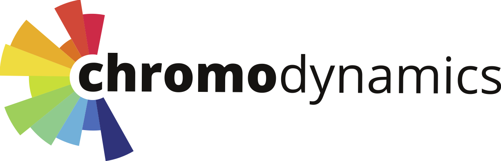
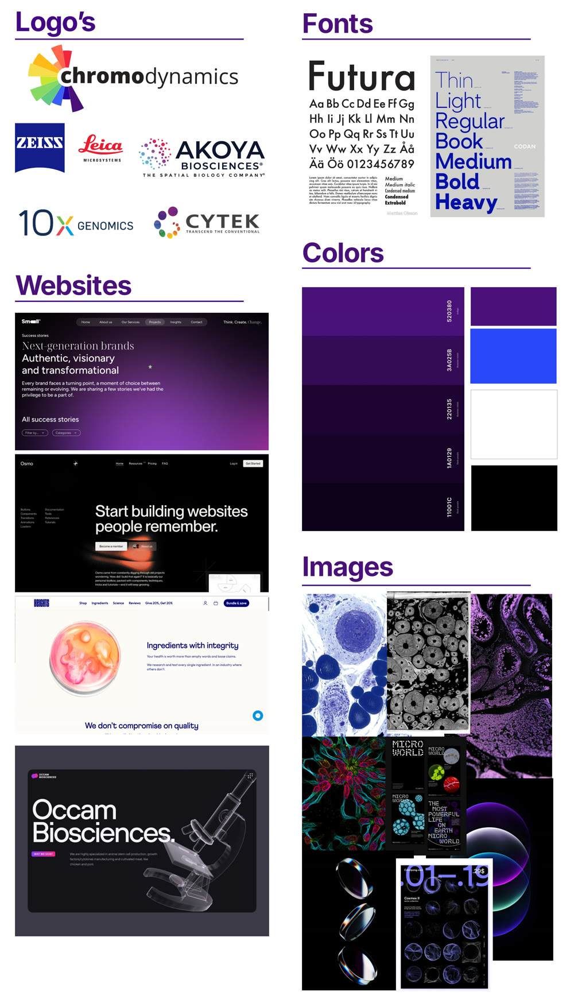
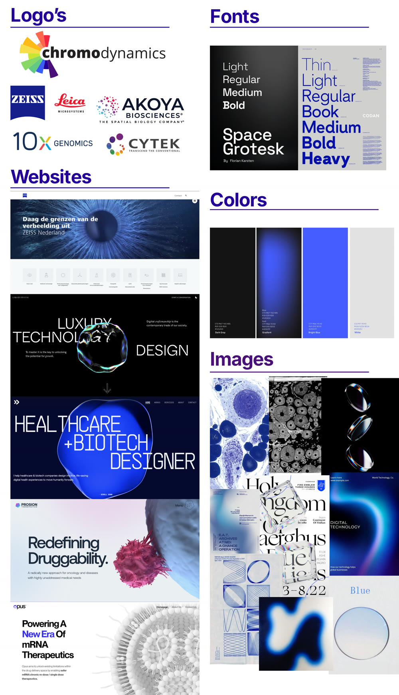
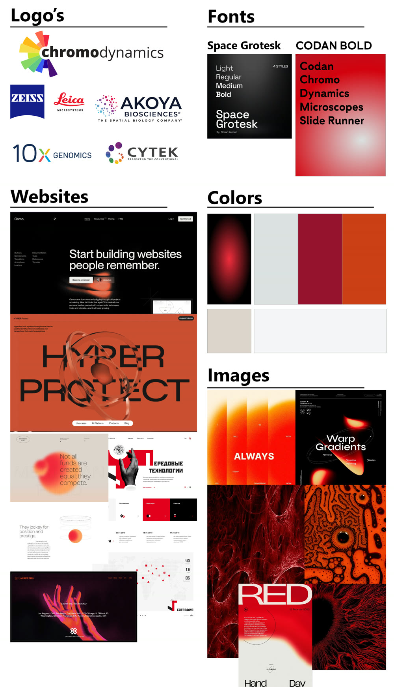
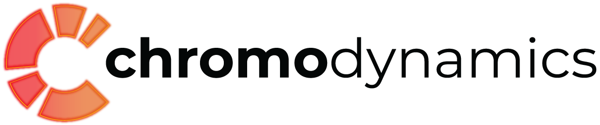
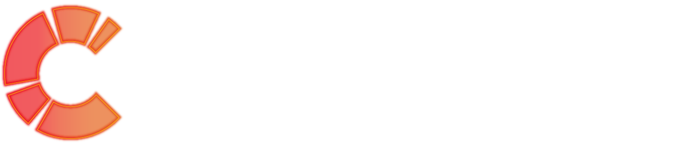
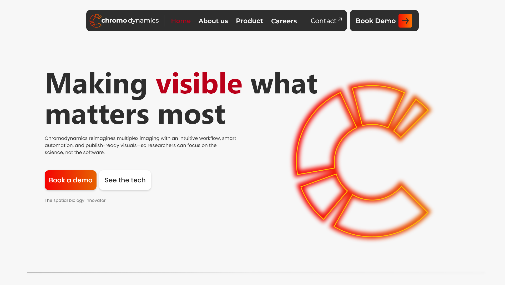
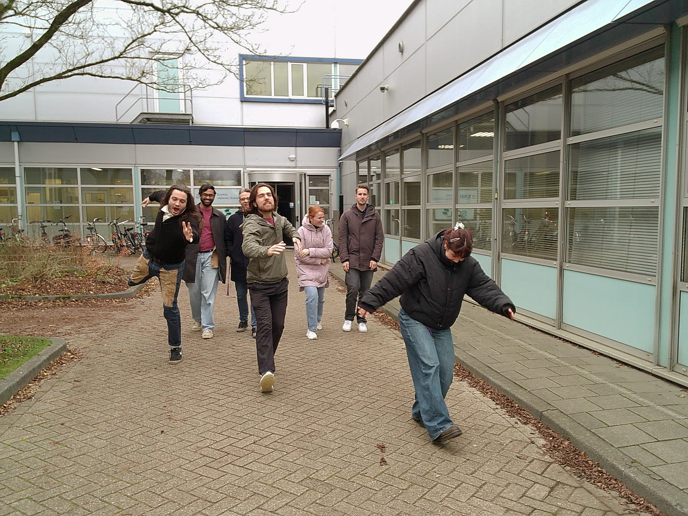

01 — Introduction
Rebranding a microscopy company
During my 18-week internship I researched and redesigned the brand of Chromodynamics, a company in Eindhoven that develops measurement technology for medical research. I followed Design Thinking from start to finish: research, defining the direction, exploring ideas, prototyping and testing with the founders.
It was also a personal challenge. Nobody at Chromodynamics had a background in UI/UX design, so I was the design expert in the company and had to take the lead myself.
02 — The problem
Strong technology, unclear brand
Chromodynamics' technology is strong, but its brand was not clear or consistent across platforms. The logo, colours, typography, website and social media did not reflect the company's values or set it apart from competitors. That made it harder to show its innovative, scientific character to potential clients, partners and future employees.
The spectrum logo was a good idea, but it was too wide and hard to read at small sizes. The website was also purple while the logo was a rainbow, so it felt like two separate brands.

Originally I was only supposed to help redesign the existing logo, not create a new one from scratch. They mainly wanted help because they didn't have an icon version.
03 — Research
How can the brand reflect who they are?
I started with one main question: how can Chromodynamics' brand identity be improved to better reflect their values and attract their target audience? I answered it in four parts.
My conclusion: Chromodynamics needed a consistent design system (logo, colours, typography and visuals) that balances scientific credibility with approachable storytelling. Five principles guided the redesign from there: clarity, consistency, credibility, approachability and innovation.
After seeing the research, the founders realised a small logo update wasn't going to cut it, and asked me to redesign the whole brand.
04 — The new identity
A mark built from segments
Before touching the logo, I made three moodboards, each a different direction for the fonts, colours and imagery. The red one was chosen.



From there I tested colours, typography and gradients, and went through many logo iterations with the founders' feedback. Because they wanted to keep the spectrum wheel as a base, I kept its wedges, but turned the wide rainbow into a compact C in red and orange that also works as an icon.
The segmented C shows how individual elements, each with their own meaning, come together in a shared direction. Every wedge is distinct, yet they all connect through the same centre.
The brand guide
I put everything into a brand guide: the brand values, the tone of voice and a new tagline, “The spatial biology innovator”, plus rules for logo use, clear space, colours and typography. Instead of the full rainbow, the palette is now a deep red, a bright orange and two neutrals.



- Deep redCore brand colour
#BA0019 - OrangeWarmth and contrast
#FF7A00 - Dark greyText and neutral base
#2E2E2E - Light greyBackground
#F7F7F7
Aa
Montserrat Headings · Bold, MediumAa
Poppins Body text · Regular05 — Website prototype
Making visible what matters most

06 — App UI redesign
Slide Runner, in the new brand

07 — The team
18 weeks at Chromodynamics
The colleagues I worked with during my internship in Eindhoven.


